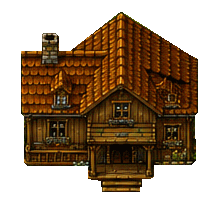
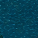

Abertura da porta

Movimento da água

Estudos exportados do Aseprite. A porta mantém batentes e escada fixos; a água usa seis quadros sutis. A sequência funcional já foi conferida no Unity: ver no jogo. O acabamento visual continua em andamento.

